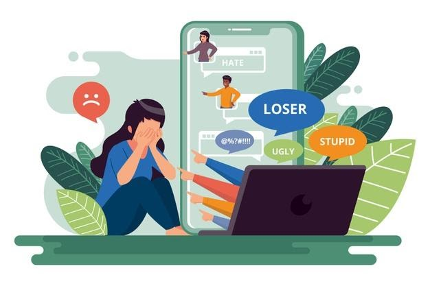

Lo que debemos saber
- ¿Qué es el Bullying?
- ¿Cuáles son los tipos más comunes?
- ¿Cómo saber que me están haciendo bullying?
- ¿Cómo reaccionar ante esta situación?

En este sitio web, vamos a estar tocando uno tema de problema social que es muy común actualmente en nuestra sociedad, un problema con el que vivimos a diario.
Aquí dejo un vídeo sobre la autoestima, para que recuerdes que eres muy valios@ y que no importa lo que digan los demás, tu siempre sientete bien contigo mism@.
El bullying es un acoso que sufren muchas personas actualmente. Es un tipo de maltrato psicológico, físico o verbal que se dan más común en las escuelas y por redes sociales (a lo que se llama Ciberbulling). Este es un problema que puede prolongarse por mucho tiempo sino se le soluciona.
Bullying Físico: Generalmente cuando se habla de bullying físico, se tiende a pensar que sólo son golpes fuertes, palizas, etc. sin embargo, este tipo de agresión puede ir desde un simple empujón o manoseo, hasta los ejemplos dados anteriormente.

Bullying Emocional: es una de las formas de bullying más complejas de detectar, ya que tiende a ser manifestado a espaldas de la víctima dado que su objetivo es menoscabar a una persona, evitando que se integre a algún grupo.
Bullying Verbal: Es la forma de abuso escolar más frecuente y su objetivo es atacar a la otra persona haciendo notar que es distinto al resto, resaltando generalmente sus características negativas (físicas, psicológicas o sociales).
Vía Internet o Ciberbullying: Esta es una forma de acoso que nació con las tecnologías 2.0 y permite que el hostigamiento verbal esté presente en más de un área de la vida de la víctima. Así es como los mensajes de Whastapp, publicaciones en Facebook e Instagram y hasta correos electrónicos, son utilizados para que la víctima esté constantemente recordando el acoso.
La mejor manera para darte cuenta si lo que te están haciendo es bullying o principio de este acoso, es si lo que te dicen o hacen te afecta emocianal o fisicamente, si te sientes bien cuando te dicen cosas; si la respuesta es no, no estás para nada bien con esta situación significa que debes empezar a actuar, a no quedarte callad@, porque es principio de bullying, un bullying que por el momento te afecta solo un poco, pero sino le pones alto, puede seguir creciendo cada día y empeorando, hasta llegar a un punto extremos en el que el individuo, puede salir muy lastimado y con serios problemas de autoconfianza y confianza en los demás.
Lo primero que deberiamos hacer es hablar con alguien de confianza o que sea mayor que nosotros, contarle la situación, contarle como te sientes; esto para que no te sientas solo. La mejor manera de salir de esa depresión que te genera el acoso es expresandote.
No debemos reaccionar con agresión porque lo único que lograriamos es empeorar las cosas, y estariamos igualandonos a ellos y no debemos hacerlo, porque nosotros deberiamos dar el ejemplo que no somos igual que ellos y que nosotros si tenemos valores y un buen corazón para no pagarles de la misma manera de la que nos tratan.
Una posible solución para acabar por completo este acoso o por lo menos controlarlo, es que enseñemos a los niños desde el hogar a ser empáticos, ya que es en el hogar primeramente donde se forman e inculcan los valores.
¿Por qué la empatía? Porque es una cualidad que si no la respetamos nos estaríamos haciendo daño a nosotros mismos, es por esto que es un valor con mucha importancia para solucionar el problema del acoso escolar o bullying que se da a nivel mundial entre a población infantil y juvenil. "Deberiamos empezar a tratar como deseamos ser tratados".

Nota: Todo lo anterior descrito, está basado en opiniones con el fin de ayudar y darles aliento a las personas que lo necesitan.